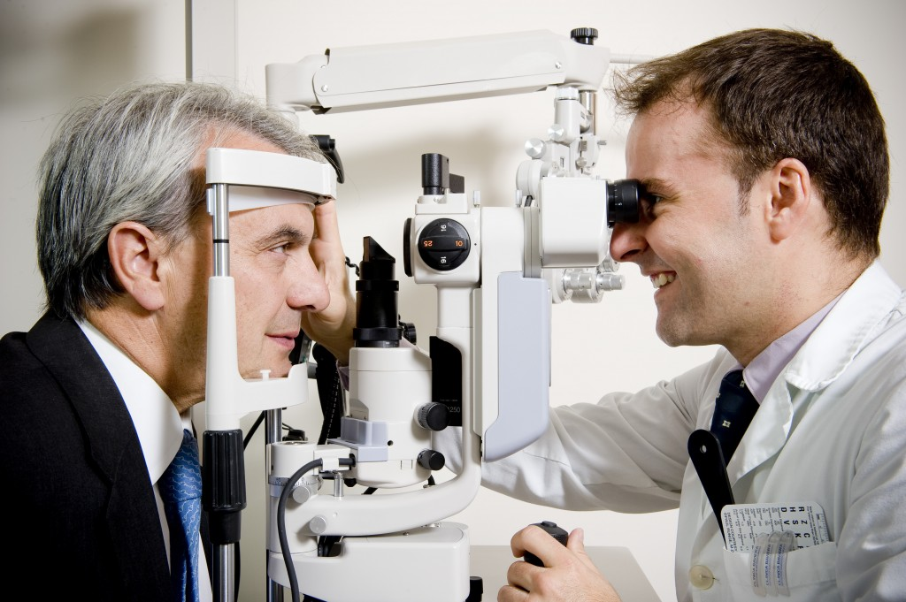

Bienvenido
La ciudad de Cádiz acogerá durante los próximos días 27, 28 y 29 de octubre el I Congreso de Oftalmología, gracias a la AAOA, sociedad que se mantiene y consolida en los primeros puestos del ranking Nacional de Sociedades Científicas Oftalmológicas. El evento tendrá lugar en el Palacio de Congresos de Cádiz y congregará a un gran número de oftalmólogos andaluces de acreditado prestigio.
